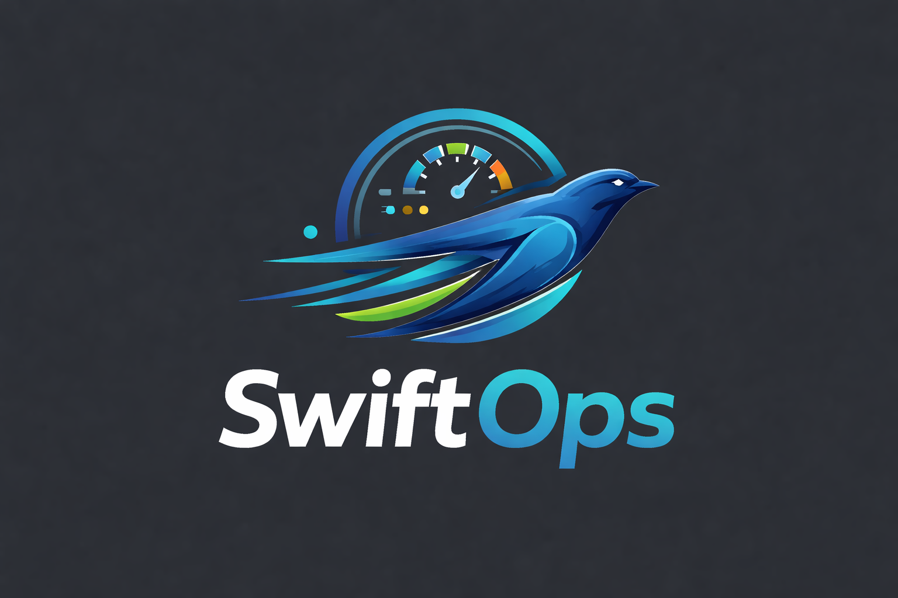

A custom-built inventory and shipment management dashboard designed specifically for my current workplace to dramatically improve operational efficiency and decision-making.

As an Operations Manager at a retail store, I handle two major shipments every week (Monday and Wednesday arrivals). Each manifest contains hundreds of SKUs and thousands of units. The challenges I faced daily included:
Manual manifest review was time-consuming and error-prone. Identifying new products, tracking quantities, and planning for incoming shipments required scrolling through lengthy PDFs and manually comparing data week over week.
I built SwiftOps to automate the entire manifest processing workflow and provide actionable intelligence for better operational planning. The system:
Upload manifest PDFs and automatically extract all SKUs, descriptions, quantities, and case packs using intelligent table detection.
Instantly identifies products that have never been received before, allowing proactive preparation for new inventory.
Automatically creates tasks when new products are detected, with priority levels and due dates tied to arrival schedules.
Powered by SentinelAI, get intelligent analysis of manifests, trend identification, and planning recommendations.
Key Innovation: The AI assistant understands the context of inventory management and can answer questions like "What should I prioritize for Monday's truck?" or "Are there any concerning trends in recent shipments?"
By automating manifest processing and providing intelligent insights, SwiftOps transforms reactive inventory management into proactive operational planning. Staff can be prepared for new products, space can be allocated in advance, and decisions are backed by historical data rather than guesswork.
SwiftOps is built as a full-stack web application with a focus on reliability and ease of use:
This project demonstrates my ability to identify real problems and build practical solutions. Rather than creating a hypothetical tool, I analyzed the pain points in my actual job and engineered a system to address them directly.
This is what I do: I see inefficiencies, understand the underlying data problems, and build tools that make work faster, smarter, and more reliable. SwiftOps showcases the intersection of my technical skills and my operational management experience.